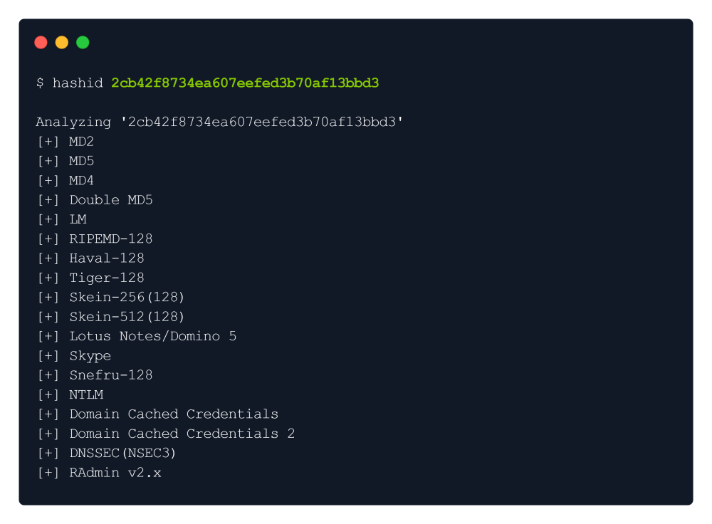
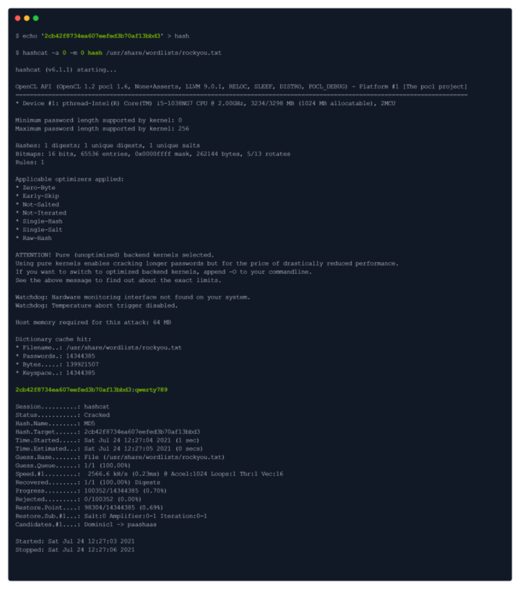
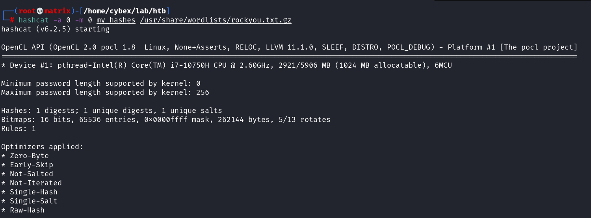
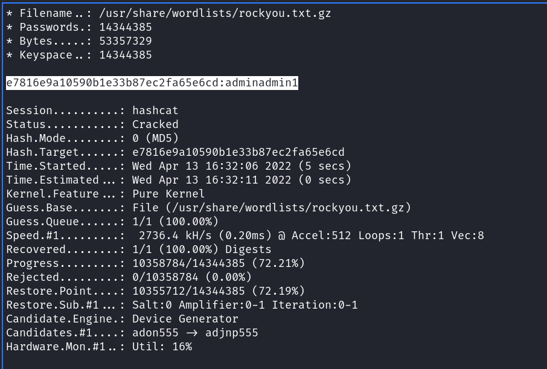

hashcat & hashid
We can see the credentials of admin:2cb42f8734ea607eefed3b70af13bbd3 , which we might be able to use.
But the password seems hashed.
We will try to identify the hash type & crack it with the hashcat:

It provides a huge list of possible hashes, however, we will go with MD5 first:
We will put the hash in a text file called hash & then crack it with hashcat:

We got the password : qwerty789
One more Hashcat Example:

We can see the password (adminadmin1) in the following snap.

From Google
hashcat -a 0 -m 0 crackme.txt /usr/share/seclists/Passwords/Leaked-Databases/md5decryptor-uk.txt -r /usr/share/hashcat/rules/best64.rule
Hash Help:
hashcat -h | grep -i NTLM
Hash Wiki (To ge the codes for -m)
https://hashcat.net/wiki/doku.php?id=example_hashes
Cracking a salted Password where salt is known:
Seeing the hashcat wiki:
1710 | sha512($pass.$salt) | Raw Hash salted and/or iterated
Thus we need to combine the password hash and salt in our hash file
Note: Separator is ':'
eg.
Password_hash:salt
6d05358f090eea56a238af02e47d44ee5489d234810ef6240280857ec69712a3e5e370b8a41899d0196ade16c0d54327c5654019292cbfe0b5e98ad1fec71bed:1c362db832f3f864c8c2fe05f2002a05
This is kept in a file and fed to hashcat.
hashcat -m 1710 overpass2-new-hash /usr/share/wordlists/rockyou.txt
We cracked the Password as : november16